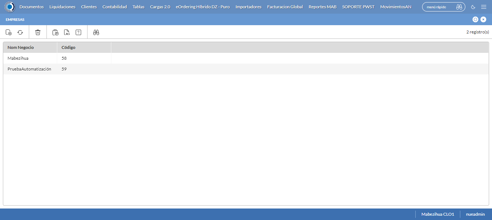
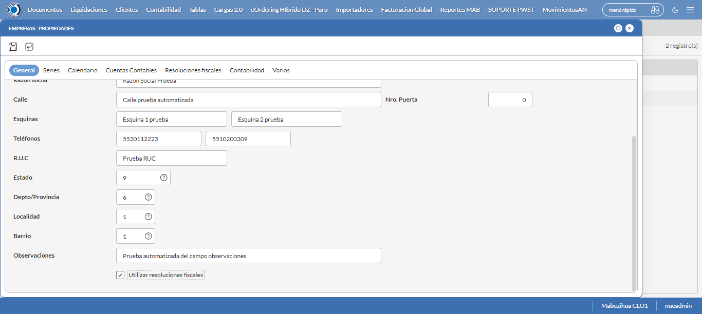
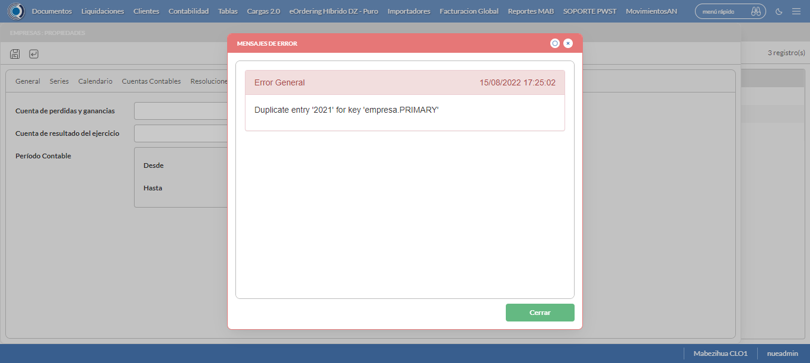
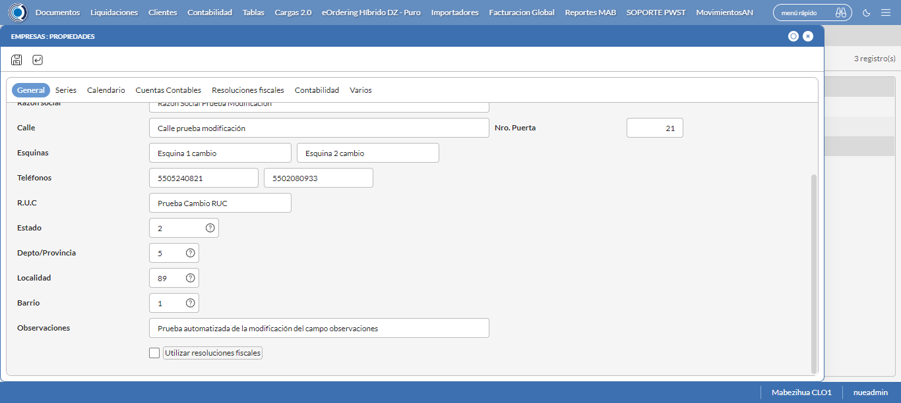
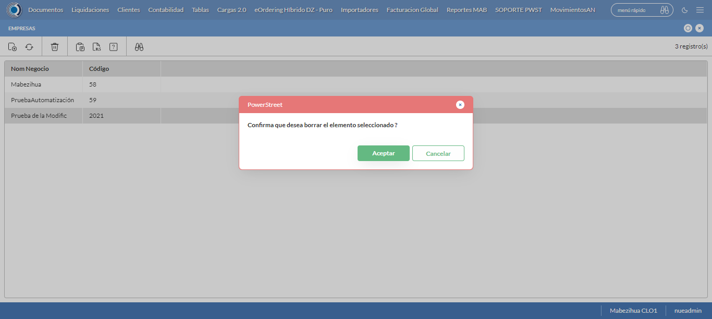

Desarrollado por : Area de Testing PWST
Fecha y hora de inicio : 2022-08-15 15:19:16
Duracion : 0:11:30.123341
Resultado : Total 8，Correctos 8 ，Taza de resultado 100.00%
Resumen 100.00% Errores 0 Fallidos 0 Correctos 8 Test realizados 8
| Caso de Prueba | Total | Correctos | Fallido | Error | Detalles | Captura del error |
| Empresas.Test: Escenario 1 de Empresas | 8 | 8 | 0 | 0 | Detalles | |
test |
pt1_1: 2022-08-15 15:19:18,939 - root - INFO - Se abre el chrome
2022-08-15 15:19:23,086 - root - INFO - Entra a la URL
2022-08-15 15:19:23,227 - root - INFO - Maximiza la pantalla
2022-08-15 15:19:26,290 - root - INFO - Cambia al frame
|
|
||||
test_000: Ingresa a la base de datos |
pt1_2: 2022-08-15 15:19:29,397 - root - INFO - Escribe el usuario
2022-08-15 15:19:29,524 - root - INFO - Escribe la contraseña
2022-08-15 15:19:29,687 - root - INFO - Se dio clic en el boton ingresar
2022-08-15 15:19:33,215 - root - INFO - Ejecutar Enterprise
2022-08-15 15:19:33,216 - root - INFO - Captura: C:\xampp\htdocs\versiones\automatizaciones\AutoPWST\01EMP\report\img screen：20220815_15_19_33.png
2022-08-15 15:19:37,471 - root - INFO - Cambia entre pestañas
|

|
||||
test_001: Abre menu y ejecuta pantalla |
pt1_3: 2022-08-15 15:20:01,774 - root - INFO - Abre el menu completo
2022-08-15 15:20:14,701 - root - INFO - Abre la pantalla de Empresas
2022-08-15 15:20:14,767 - root - INFO - La pantalla ejecutada es Empresas
2022-08-15 15:20:17,779 - root - INFO - Captura: C:\xampp\htdocs\versiones\automatizaciones\AutoPWST\01EMP\report\img screen：20220815_15_20_17.png
2022-08-15 15:20:17,982 - root - INFO - Se presiona el boton 'Nuevo', para crear un nuevo registro.
|
 | ||||
test_002: Abre la ventana de nuevo y crear un registro |
pt1_4: 2022-08-15 15:20:23,028 - root - INFO - Se abrio la pantalla para el ingreso de un registro nuevo.
2022-08-15 15:20:23,072 - root - INFO - El campo 'Codigo' si se encuentra visible.
2022-08-15 15:20:23,117 - root - INFO - El campo 'Descrición' si se encuentra visible.
2022-08-15 15:20:23,172 - root - INFO - El campo 'Codigo Alternativo' si se encuentra visible.
2022-08-15 15:20:23,214 - root - INFO - El campo 'Codigo GLN' si se encuentra visible.
2022-08-15 15:20:23,255 - root - INFO - El campo 'Razón social' si se encuentra visible.
2022-08-15 15:20:23,295 - root - INFO - El campo 'Calle' si se encuentra visible.
2022-08-15 15:20:23,337 - root - INFO - El campo 'Esquinas' si se encuentra visible.
2022-08-15 15:20:23,378 - root - INFO - El campo 'Teléfonos' si se encuentra visible.
2022-08-15 15:20:23,422 - root - INFO - El campo 'R.U.C' si se encuentra visible.
2022-08-15 15:20:23,467 - root - INFO - El campo 'Estado' si se encuentra visible.
2022-08-15 15:20:23,510 - root - INFO - El campo 'Depto/Provincia' si se encuentra visible.
2022-08-15 15:20:23,551 - root - INFO - El campo 'Localidad' si se encuentra visible.
2022-08-15 15:20:23,592 - root - INFO - El campo 'Barrio' si se encuentra visible.
2022-08-15 15:20:23,633 - root - INFO - El campo 'Observaciones' si se encuentra visible.
2022-08-15 15:20:23,676 - root - INFO - El campo 'Resoluciones Fiscales' si se encuentra visible.
2022-08-15 15:20:23,727 - root - INFO - El campo 'Nro. Puerta' si se encuentra visible.
2022-08-15 15:20:23,818 - root - INFO - Ingresa el codigo del nuevo registro
2022-08-15 15:20:27,070 - root - INFO - Ingresa la descripción del nuevo registro
2022-08-15 15:20:30,235 - root - INFO - Ingresa el codigo alternativo del nuevo registro
2022-08-15 15:20:33,381 - root - INFO - Ingresa el codigo GLN del nuevo registro
2022-08-15 15:20:36,566 - root - INFO - Ingresa la Razón Social del nuevo registro
2022-08-15 15:20:39,728 - root - INFO - Ingresa la calle del nuevo registro
2022-08-15 15:20:42,914 - root - INFO - Ingresa la esquina 1 del nuevo registro
2022-08-15 15:20:46,066 - root - INFO - Ingresa la esquina 2 del nuevo registro
2022-08-15 15:20:49,233 - root - INFO - Ingresa el Telefono 1 del nuevo registro
2022-08-15 15:20:52,358 - root - INFO - Ingresa el Telefono 2 del nuevo registro
2022-08-15 15:20:55,500 - root - INFO - Ingresa el ruc del nuevo registro
2022-08-15 15:21:40,384 - root - INFO - Ingresa las Observaciones del nuevo registro
2022-08-15 15:21:46,500 - root - INFO - Captura: C:\xampp\htdocs\versiones\automatizaciones\AutoPWST\01EMP\report\img screen：20220815_15_21_46.png
2022-08-15 15:21:46,766 - root - INFO - Ingresa el Num de la puerta del nuevo registro
2022-08-15 15:21:49,893 - root - INFO - Se hace el cambio de pestaña para continuar con el registro nuevo
2022-08-15 15:21:52,998 - root - INFO - Se presiona el boton 'Nuevo', para crear un nuevo registro.
2022-08-15 15:21:58,073 - root - INFO - El campo 'Código' si se encuentra visible.
2022-08-15 15:21:58,122 - root - INFO - El campo 'Descripción' si se encuentra visible.
2022-08-15 15:21:58,169 - root - INFO - El campo 'Codigo alternativo' si se encuentra visible.
2022-08-15 15:21:58,289 - root - INFO - Ingresa el Codigo del nuevo registro
2022-08-15 15:22:01,466 - root - INFO - Ingresa la Descripcion del nuevo registro
2022-08-15 15:22:04,583 - root - INFO - Ingresa el Codigo alternativo del nuevo registro
2022-08-15 15:22:07,697 - root - INFO - Se hace el cambio de pestaña para continuar con el registro nuevo
2022-08-15 15:22:10,825 - root - INFO - Se presiona el boton 'Nuevo', para crear un nuevo registro.
2022-08-15 15:22:15,900 - root - INFO - El campo 'Tipo Documento' si se encuentra visible.
2022-08-15 15:22:15,950 - root - INFO - El campo 'Vías en BackOffice' si se encuentra visible.
2022-08-15 15:22:16,000 - root - INFO - El campo 'Vías en Mobile' si se encuentra visible.
2022-08-15 15:22:16,052 - root - INFO - El campo 'Descrpción de vías' si se encuentra visible.
2022-08-15 15:22:16,181 - root - INFO - Ingresa el Tipo Documento del nuevo registro
2022-08-15 15:22:19,308 - root - INFO - Ingresa las Vias Backoffice del nuevo registro
2022-08-15 15:22:22,415 - root - INFO - Ingresa las Vias Mobile del nuevo registro
2022-08-15 15:22:25,562 - root - INFO - Ingresa la Descripción Vias del nuevo registro
2022-08-15 15:22:28,650 - root - INFO - Se presiona el boton 'Guardar', para guardar el registro.
2022-08-15 15:22:33,754 - root - INFO - Se presiona el boton 'Guardar', para guardar el registro.
2022-08-15 15:22:38,859 - root - INFO - Se hace el cambio de pestaña para continuar con el registro nuevo
2022-08-15 15:22:41,912 - root - INFO - El campo 'Lunes' si se encuentra visible.
2022-08-15 15:22:41,955 - root - INFO - El campo 'Martes' si se encuentra visible.
2022-08-15 15:22:41,993 - root - INFO - El campo 'Miércoles' si se encuentra visible.
2022-08-15 15:22:42,035 - root - INFO - El campo 'Jueves' si se encuentra visible.
2022-08-15 15:22:42,077 - root - INFO - El campo 'Viernes' si se encuentra visible.
2022-08-15 15:22:42,118 - root - INFO - El campo 'Sábado' si se encuentra visible.
2022-08-15 15:22:42,159 - root - INFO - El campo 'Domingo' si se encuentra visible.
2022-08-15 15:23:00,886 - root - INFO - Se hace el cambio de pestaña para continuar con el registro nuevo
2022-08-15 15:23:03,953 - root - INFO - El campo 'Período Contable' si se encuentra visible.
2022-08-15 15:23:03,995 - root - INFO - El campo 'Desde' si se encuentra visible.
2022-08-15 15:23:04,036 - root - INFO - El campo 'Hasta' si se encuentra visible.
2022-08-15 15:23:04,241 - root - INFO - Ingresa la fecha Desde del nuevo registro
2022-08-15 15:23:07,453 - root - INFO - Ingresa la fecha Hasta del nuevo registro
2022-08-15 15:23:10,559 - root - INFO - Se da clic en el boton Guardar; se debe crear un nuevo registro.
|
 | ||||
test_003: Repetir el registro creado anteriormente |
pt1_5: 2022-08-15 15:23:15,670 - root - INFO - Se presiona el boton 'Refrescar', para crear un nuevo registro igual al anterior.
2022-08-15 15:23:20,808 - root - INFO - Se presiona el boton 'Nuevo', para crear un nuevo registro igual al anterior.
2022-08-15 15:23:25,870 - root - INFO - Se abrio la pantalla para el ingreso de un registro nuevo.
2022-08-15 15:23:25,931 - root - INFO - El campo 'Codigo' si se encuentra visible.
2022-08-15 15:23:25,984 - root - INFO - El campo 'Descrición' si se encuentra visible.
2022-08-15 15:23:26,032 - root - INFO - El campo 'Codigo Alternativo' si se encuentra visible.
2022-08-15 15:23:26,074 - root - INFO - El campo 'Codigo GLN' si se encuentra visible.
2022-08-15 15:23:26,115 - root - INFO - El campo 'Razón social' si se encuentra visible.
2022-08-15 15:23:26,157 - root - INFO - El campo 'Calle' si se encuentra visible.
2022-08-15 15:23:26,199 - root - INFO - El campo 'Esquinas' si se encuentra visible.
2022-08-15 15:23:26,240 - root - INFO - El campo 'Teléfonos' si se encuentra visible.
2022-08-15 15:23:26,281 - root - INFO - El campo 'R.U.C' si se encuentra visible.
2022-08-15 15:23:26,322 - root - INFO - El campo 'Estado' si se encuentra visible.
2022-08-15 15:23:26,365 - root - INFO - El campo 'Depto/Provincia' si se encuentra visible.
2022-08-15 15:23:26,406 - root - INFO - El campo 'Localidad' si se encuentra visible.
2022-08-15 15:23:26,462 - root - INFO - El campo 'Barrio' si se encuentra visible.
2022-08-15 15:23:26,518 - root - INFO - El campo 'Observaciones' si se encuentra visible.
2022-08-15 15:23:26,559 - root - INFO - El campo 'Resoluciones Fiscales' si se encuentra visible.
2022-08-15 15:23:26,601 - root - INFO - El campo 'Nro. Puerta' si se encuentra visible.
2022-08-15 15:23:26,693 - root - INFO - Ingresa el codigo del nuevo registro
2022-08-15 15:23:29,894 - root - INFO - Ingresa la descripción del nuevo registro
2022-08-15 15:23:33,033 - root - INFO - Ingresa el codigo alternativo del nuevo registro
2022-08-15 15:23:36,175 - root - INFO - Ingresa el codigo GLN del nuevo registro
2022-08-15 15:23:39,331 - root - INFO - Ingresa la Razón Social del nuevo registro
2022-08-15 15:23:42,529 - root - INFO - Ingresa la calle del nuevo registro
2022-08-15 15:23:45,697 - root - INFO - Ingresa la esquina 1 del nuevo registro
2022-08-15 15:23:48,878 - root - INFO - Ingresa la esquina 2 del nuevo registro
2022-08-15 15:23:52,010 - root - INFO - Ingresa el Telefono 1 del nuevo registro
2022-08-15 15:23:55,152 - root - INFO - Ingresa el Telefono 2 del nuevo registro
2022-08-15 15:23:58,291 - root - INFO - Ingresa el ruc del nuevo registro
2022-08-15 15:24:43,336 - root - INFO - Ingresa las Observaciones del nuevo registro
2022-08-15 15:24:49,555 - root - INFO - Ingresa el Num de la puerta del nuevo registro
2022-08-15 15:24:52,686 - root - INFO - Se hace el cambio de pestaña para continuar con el registro nuevo
2022-08-15 15:24:55,761 - root - INFO - El campo 'Período Contable' si se encuentra visible.
2022-08-15 15:24:55,804 - root - INFO - El campo 'Desde' si se encuentra visible.
2022-08-15 15:24:55,848 - root - INFO - El campo 'Hasta' si se encuentra visible.
2022-08-15 15:24:56,037 - root - INFO - Ingresa la fecha Desde del nuevo registro
2022-08-15 15:24:59,276 - root - INFO - Ingresa la fecha Hasta del nuevo registro
2022-08-15 15:25:02,380 - root - INFO - Se da clic en el boton Guardar; se debe crear un nuevo registro.
2022-08-15 15:25:07,390 - root - INFO - Captura: C:\xampp\htdocs\versiones\automatizaciones\AutoPWST\01EMP\report\img screen：20220815_15_25_07.png
2022-08-15 15:25:07,591 - root - INFO - Se presiona el boton 'Cerrar', para cerrar el mensaje de duplicidad de llave primaria
2022-08-15 15:25:10,695 - root - INFO - Se presiona el boton 'Cerrar', para cerrar la ventana
|
 | ||||
test_004: Modificar el registro |
pt1_6: 2022-08-15 15:25:14,809 - root - INFO - Se presiona el boton 'Refrescar', para crear un nuevo registro igual al anterior.
2022-08-15 15:25:24,426 - root - INFO - Se da clic en el registro creado, para proceder a modificarlo.
2022-08-15 15:25:27,753 - root - INFO - Ingresa la descripción del nuevo registro
2022-08-15 15:25:30,967 - root - INFO - Ingresa el codigo alternativo del nuevo registro
2022-08-15 15:25:34,132 - root - INFO - Ingresa el codigo GLN del nuevo registro
2022-08-15 15:25:37,380 - root - INFO - Ingresa la Razón Social del nuevo registro
2022-08-15 15:25:40,599 - root - INFO - Ingresa la calle del nuevo registro
2022-08-15 15:25:43,785 - root - INFO - Ingresa la esquina 1 del nuevo registro
2022-08-15 15:25:46,968 - root - INFO - Ingresa la esquina 2 del nuevo registro
2022-08-15 15:25:50,144 - root - INFO - Ingresa el Telefono 1 del nuevo registro
2022-08-15 15:25:53,301 - root - INFO - Ingresa el Telefono 2 del nuevo registro
2022-08-15 15:25:56,534 - root - INFO - Ingresa el ruc del nuevo registro
2022-08-15 15:26:41,692 - root - INFO - Ingresa las Observaciones del nuevo registro
2022-08-15 15:26:47,814 - root - INFO - Captura: C:\xampp\htdocs\versiones\automatizaciones\AutoPWST\01EMP\report\img screen：20220815_15_26_47.png
2022-08-15 15:26:48,078 - root - INFO - Ingresa el Num de la puerta del nuevo registro
2022-08-15 15:26:51,160 - root - INFO - Se hace el cambio de pestaña para continuar con el registro nuevo
2022-08-15 15:26:58,800 - root - INFO - Se da clic en el registro creado, para proceder a modificarlo.
2022-08-15 15:27:02,049 - root - INFO - Ingresa la Descripcion del nuevo registro
2022-08-15 15:27:05,223 - root - INFO - Ingresa el Codigo alternativo del nuevo registro
2022-08-15 15:27:08,330 - root - INFO - Se hace el cambio de pestaña para continuar con el registro nuevo
2022-08-15 15:27:15,925 - root - INFO - Se da clic en el registro creado, para proceder a modificarlo.
2022-08-15 15:27:19,133 - root - INFO - Ingresa el Tipo Documento del nuevo registro
2022-08-15 15:27:22,331 - root - INFO - Ingresa las Vias Backoffice del nuevo registro
2022-08-15 15:27:25,530 - root - INFO - Ingresa las Vias Mobile del nuevo registro
2022-08-15 15:27:28,756 - root - INFO - Ingresa la Descripción Vias del nuevo registro
2022-08-15 15:27:31,870 - root - INFO - Se presiona el boton 'Guardar', para guardar el registro.
2022-08-15 15:27:36,973 - root - INFO - Se presiona el boton 'Guardar', para guardar el registro.
2022-08-15 15:27:42,089 - root - INFO - Se hace el cambio de pestaña para continuar con el registro nuevo
2022-08-15 15:27:54,519 - root - INFO - Se hace el cambio de pestaña para continuar con el registro nuevo
2022-08-15 15:27:57,631 - root - INFO - Se presiona el boton 'Nuevo', para crear un nuevo registro.
2022-08-15 15:28:02,694 - root - INFO - El campo 'Fecha Autorización' si se encuentra visible.
2022-08-15 15:28:02,736 - root - INFO - El campo 'Serie' si se encuentra visible.
2022-08-15 15:28:02,779 - root - INFO - El campo 'Nro. Resolución' si se encuentra visible.
2022-08-15 15:28:02,822 - root - INFO - El campo 'Rango Correlativo' si se encuentra visible.
2022-08-15 15:28:13,465 - root - INFO - Ingresa el Num de la puerta del nuevo registro
2022-08-15 15:28:16,575 - root - INFO - Ingresa el Rango Inicio del nuevo registro
2022-08-15 15:28:19,736 - root - INFO - Ingresa el Rango Fin del nuevo registro
2022-08-15 15:28:22,839 - root - INFO - Se da clic en el boton Guardar; se debe modificar la informacion del registro.
2022-08-15 15:28:27,939 - root - INFO - Se da clic en el boton Guardar; se debe modificar la informacion del registro.
|
 | ||||
test_005: Eliminar el registro creado |
pt1_7: 2022-08-15 15:28:33,036 - root - INFO - Se presiona el boton 'Refrescar', para proceder a eliminar el registro.
2022-08-15 15:28:42,658 - root - INFO - Se da clic en el registro creado, para proceder a eliminarlo.
2022-08-15 15:28:45,759 - root - INFO - Se hace el cambio de pestaña para continuar con el registro nuevo
2022-08-15 15:28:53,407 - root - INFO - Se da clic en el registro creado, para proceder a modificarlo.
2022-08-15 15:29:01,525 - root - INFO - Se presiona el boton 'Eliminar', para eliminar el registro.
2022-08-15 15:29:01,631 - root - INFO - Se da clic en el boton Guardar; se debe modificar la informacion del registro.
2022-08-15 15:29:11,228 - root - INFO - Se da clic en el registro creado, para proceder a eliminarlo.
2022-08-15 15:29:14,342 - root - INFO - Se hace el cambio de pestaña para continuar con el registro nuevo
2022-08-15 15:29:21,951 - root - INFO - Se da clic en el registro creado, para proceder a modificarlo.
2022-08-15 15:29:25,080 - root - INFO - Se hace el cambio de pestaña para continuar con el registro nuevo
2022-08-15 15:29:32,686 - root - INFO - Se da clic en el registro creado, para proceder a modificarlo.
2022-08-15 15:29:40,832 - root - INFO - Se presiona el boton 'Eliminar', para eliminar el registro.
2022-08-15 15:29:40,950 - root - INFO - Se da clic en el boton Guardar; se debe modificar la informacion del registro.
2022-08-15 15:29:46,042 - root - INFO - Se da clic en el boton Guardar; se debe modificar la informacion del registro.
2022-08-15 15:29:55,643 - root - INFO - Se da clic en el registro creado, para proceder a eliminarlo.
2022-08-15 15:29:58,792 - root - INFO - Se hace el cambio de pestaña para continuar con el registro nuevo
2022-08-15 15:30:06,417 - root - INFO - Se da clic en el registro creado, para proceder a modificarlo.
2022-08-15 15:30:14,545 - root - INFO - Se presiona el boton 'Eliminar', para eliminar el registro.
2022-08-15 15:30:14,650 - root - INFO - Se da clic en el boton Guardar; se debe modificar la informacion del registro.
2022-08-15 15:30:24,245 - root - INFO - Se da clic en el registro creado, para proceder a eliminarlo.
2022-08-15 15:30:32,367 - root - INFO - Se presiona el boton 'Eliminar', para eliminar el registro.
2022-08-15 15:30:32,369 - root - INFO - Captura: C:\xampp\htdocs\versiones\automatizaciones\AutoPWST\01EMP\report\img screen：20220815_15_30_32.png
2022-08-15 15:30:32,584 - root - INFO - Se confirma el eliminado del registro
2022-08-15 15:30:37,682 - root - INFO - Se presiona el boton 'Refrescar', para crear un nuevo registro igual al anterior.
2022-08-15 15:30:42,775 - root - INFO - Se presiona el boton 'Cerrar', para cerrar la pantalla de Categorias Fiscales.
|
 | ||||
test_006: Cerrar_Navegador |
pt1_8: 2022-08-15 15:30:47,095 - root - INFO - Se cierra chrome
|
|
||||
| Caso de prueba | 8 | 8 | 0 | 0 | Taza de resultado：100.00% | |